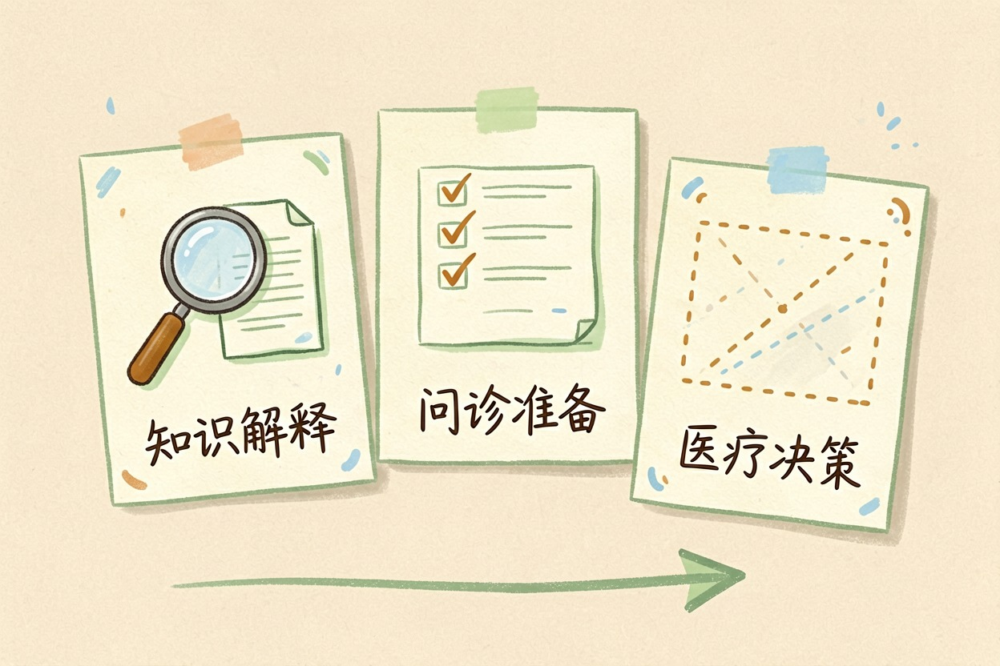
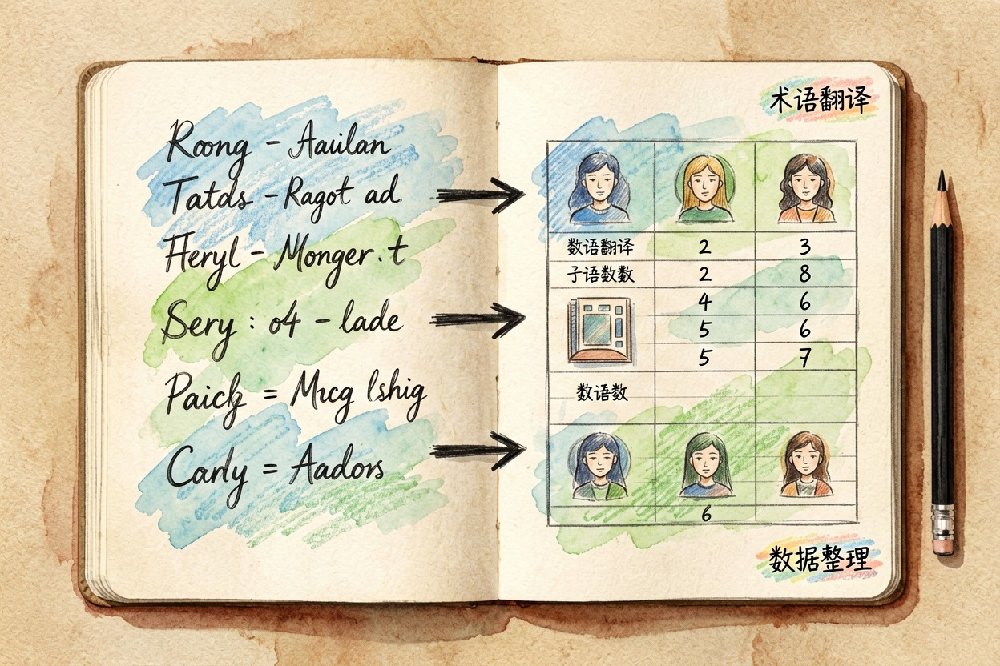

AI 问健康问题能信吗？边界在哪里说清楚 — Learntide
同样一句回答，用来备课很好，用来决定吃不吃药就危险，差别在于你拿它干什么。
AI 问健康问题能信吗：先把问题分三类

AI 问健康问题能信吗，得先看你问的是哪一类。第一类是知识题，比如某个指标代表什么。第二类是准备题，比如去医院该问医生什么。第三类是决策题，比如这个症状要不要吃药。
前两类它答得不错。第三类，别信。
分界线其实很清楚：解释既有信息它在行，替你判断身体状况它不在行。
看化验单的提问模板
以下是我的体检指标，请只做解释，不要判断我得了什么病。
1 逐项说明这个指标衡量的是什么
2 标出偏离参考范围的项，说明常见原因有哪些
3 列出我该找哪个科室、需要补做哪些检查
4 生成三个问诊时可以问医生的问题
指标：<粘贴数值和参考范围>它答得还行的部分

术语翻译是最实用的。报告上一堆缩写，它能换成人话，读完你至少知道医生在说什么。
问诊准备也值得一试。三分钟的门诊时间很紧张，提前列好症状起止时间、用药史、想问的问题，效率高很多。
科普性的常识它答得稳。怎么补水、怎么调作息、疫苗的一般安排，这类内容资料多、争议小。
还有一类是复述医嘱。医生说得快没记住，回家让它把术语解释一遍，比自己乱搜靠谱。
帮着记录也不错。每天的血压、体温、用药填进去，让它整理成表格，复诊时递给医生一看就懂。
它靠不住的地方
它看不见你。没有体温、听诊、触诊和影像，判断从一开始就缺料。
它对罕见情况不敏感。多数回答倾向常见解释，真正要命的往往是那个小概率。
药物剂量最危险。同一种药，年龄、肝肾功能、正在吃的其他药都会改结果，它给不出个体化答案。
它还会被你的措辞带跑。你说「是不是甲状腺问题」，它容易顺着这条线往下推，把别的可能压下去。
数字也要留神。发病率、有效率这种统计值，它可能记混来源，看到具体数字就当参考。
信息新旧同样是个坑。诊疗指南每隔几年就改，它复述的可能是上一版。
边界：这些信号直接去医院
胸痛、呼吸困难、意识模糊、突然的剧烈头痛，别问 AI，直接叫车或打急救电话。
高烧不退、持续呕吐、无法解释的体重下降，也不要在家里搜索里耗着。
孕妇、婴幼儿、老人和有慢病的人，问题门槛都要往下调，早去比晚去强。
任何时候，改药和停药只听主治医生的。网上的说法再一致，也替代不了你的病历。
怎么问才安全
一次只问一件事，把时间、部位、变化过程写清楚，答案会精确不少。
明确要求它给出不确定性，让它列可能性而不是下结论。
答案要交叉验证。权威医院和卫生部门的科普页写得也不难懂，花两分钟对一下。
家里人转来的养生文章，也可以丢给它挑毛病。反过来用，比直接照做强。
回到最初那个问题，AI 问健康问题能信吗，信它讲知识，不信它下判断，这条线别越过去。
本文信息核对于 2026-08-08。AI 产品的价格、免费额度与功能变动频繁，实际以各工具官网当前说明为准。